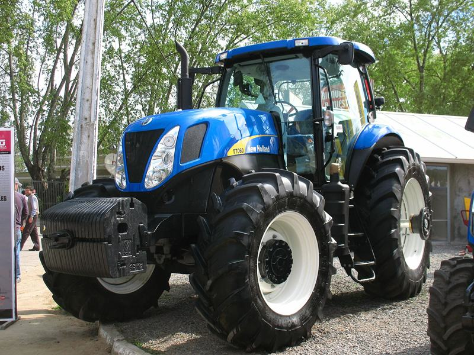

New Holland T7060

New Holland T7060 – це потужний колісний трактор, призначений для виконання енергоємних польових і транспортних робіт у великих господарствах. Модель поєднує високий рівень тягової потужності, сучасну трансмісію та комфортну кабіну для тривалої роботи в інтенсивних умовах. Завдяки повному приводу, значній масі та можливості агрегатування з широкозахопними машинами трактор ефективно працює на складних агрофонах.
| Параметр | Значення |
|---|---|
| Клас тяги | 3,0 |
| Тип ходової частини | колісний |
| Колісна формула | 4х4 (WD) |
| Тип рами | напіврамна |
| Основне призначення | енергоємні сільськогосподарські роботи, основний обробіток ґрунту, посів, транспортні операції |
| Параметр | Значення |
|---|---|
| Модель | FPT NEF (Tier 3) |
| Тип двигуна | 6-циліндровий, турбодизель з інтеркулером, система Common Rail |
| Спосіб охолодження | рідинне (водяне) |
| Розташування циліндрів | рядне, вертикальне |
| Діаметр циліндра/хід поршня | 104 мм / 132 мм |
| Робочий об’єм | 6,7 л (6728 см³) |
| Номінальна потужність | 157 кВт (213 к.с.) |
| Номінальні оберти | 2200 об/хв |
| Система пуску | електростартер |
| Питома витрата палива | 205–210 г/кВт·год |
| Параметр | Значення |
|---|---|
| Муфта зчеплення | мокра багатодискова з гідравлічним приводом (керування за допомогою Power Shuttle) |
| Тип КПП | Power Command (Full Powershift — перемикання всіх передач під навантаженням без розриву потоку потужності) |
| Кількість передач | 18 вперед / 6 назад (стандарт) або 19 вперед / 6 назад (з еко-передачею 40/50 км/год) |
| Кількість діапазонів | відсутні (повне перемикання всіх передач в одному ряду) |
| Діапазон швидкостей (вперед) | 1,5 – 40,0 км/год (опційно до 50 км/год) |
| Діапазон швидкостей (назад) | 1,4 – 15,0 км/год |
| Вал відбору потужності | задній незалежний з електрогідравлічним керуванням та системою м'якого пуску, 540 / 1000 об/хв |
| Діапазон | Передача | Швидкість, км/год | Передаточне число | Тягове зусилля, кН |
|---|---|---|---|---|
| 1 | 2,38 | 311,6 | 82,00* | |
| 2 | 2,74 | 270,7 | 82,00* | |
| 3 | 3,16 | 234,7 | 82,00* | |
| 4 | 3,64 | 203,8 | 82,00* | |
| 5 | 4,19 | 176,9 | 77,20 | |
| 6 | 4,83 | 153,6 | 67,00 | |
| 7 | 5,69 | 130,4 | 56,90 | |
| 8 | 6,55 | 113,3 | 49,45 | |
| 9 | 7,55 | 98,3 | 42,90 | |
| 10 | 8,70 | 85,3 | 37,23 | |
| 11 | 10,02 | 74,1 | 32,34 | |
| 12 | 11,54 | 64,3 | 28,06 | |
| 13 | 13,87 | 53,5 | 23,35 | |
| 14 | 15,97 | 46,5 | 20,28 | |
| 15 | 18,40 | 40,3 | 17,58 | |
| 16 | 21,21 | 35,0 | 15,27 | |
| 17 | 24,42 | 30,4 | 13,26 | |
| 18 | 28,12 / 40,00** | 26,4 / 18,5 | 11,52 / 8,11 |
Примітка: * Значення позначені зірочкою (82,00) — це максимальне тягове зусилля, обмежене масою трактора та зчепленням з ґрунтом (при вазі ~7-8 тонн). Технічно крутний момент двигуна дозволяє вищі показники, але відбудеться буксування. ** Швидкість на 18-й передачі залежить від налаштувань (транспортна швидкість може досягати 40 або 50 км/год при знижених обертах двигуна).
| Параметр | Значення |
|---|---|
| Тип коліс | пневматичні шини (радіальні) |
| Марка шин | передні: 16.9 R30; задні: 20.8 R42 (стандарт для цієї потужності) |
| Радіус ведучого колеса | 0,935 м (для задніх коліс 20.8 R42) |
| Кількість коліс | 4 (можливе встановлення спарених коліс на обох осях) |
| Ведучі мости | обидва (передній міст з активною підвіскою Terraglide™ та системою автоматичного підключення) |
| Режим | Витрата |
|---|---|
| Під час роботи з навантаженням | 28,5 – 36,0 кг/год |
| Під час холостих переїздів | 10,5 – 14,0 кг/год |
| Під час зупинок (холостий хід) | 2,2 – 3,0 кг/год |
| Параметр | Значення |
|---|---|
| Маса експлуатаційна | 7125 – 8126 кг (базова, без баласту) / до 10500 кг (макс. допустима) |
| Довжина / Ширина / Висота | 5017 мм / 2334 мм / 3165 мм |
| Колія / База | 1810–2234 мм / 2884 мм |
| Дорожній просвіт | 530 мм |
| Мінімальний радіус повороту | 5,4 м (з системою SuperSteer™ — 4,9 м) |
| Кінематична довжина | 1,45 м |
| Тип навісного пристрою | задній гідравлічний, триточковий (Кат. III/IIIn) |
| Об’єм паливного баку | 412 л |
| Параметр | Значення |
|---|---|
| Особливості кабіни | Horizon™, панорамне скління (площа 5,852м), рівень шуму 69 дБа, клімат-контроль, підвіска кабіни Comfort Ride™, сидіння Auto Comfort™ |
| Гальма | робочі — мокрі багатодискові з гідравлічним приводом на задній осі; гальмування всіма колесами за рахунок автоматичного підключення переднього мосту (4WD); пневматичний привід гальм причепа (двоконтурний) |
| Електрообладнання | акумуляторна батарея 12 В (176 Агод), генератор 150 А (опційно 200 А), система інтелектуального керування освітленням та CAN-шина |
| Начіпний пристрій | задній триточковий гідравлічний (Кат. III/IIIn) з електронним регулюванням (EDC) та зовнішніми кнопками керування на крилах, вантажопідйомність — 8647 кг |